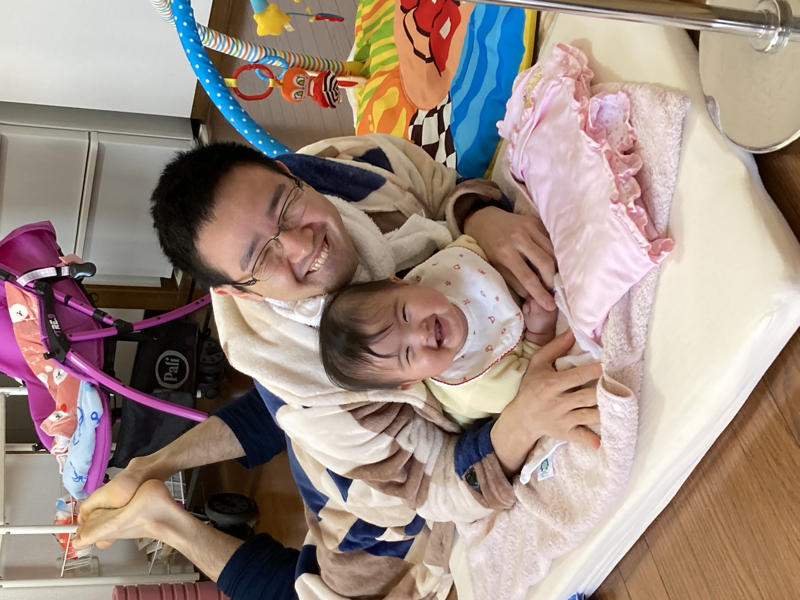
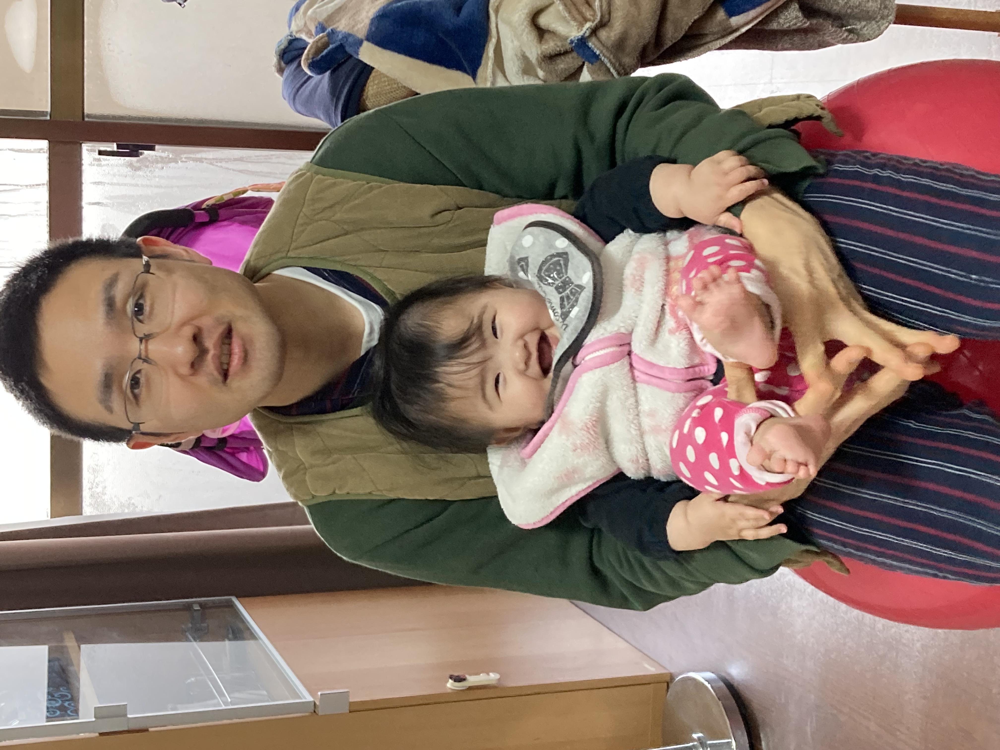

思いやりのある子どもに育てるには？発達格差が生じる理由
2023-02-03 by 内田裕之
- 「子どもが大人になったときに苦労させたくない」
- 「思いやりのある子どもに育てるには何が必要だろう？」
この記事はそんな方へ向けて書いています。
こんにちは。
子育てに悩みながらも学び改善するうっちゃんです。
子どもが大人になったときに苦労させたくないけど、どういう子育てをしたらいいのか悩んでいませんか？
実は自制心・思いやりのある子とない子に二極化しており、子どもの発達格差が生じています。
この記事では発達格差が生じる理由と親ができることについて紹介します。
思いやりのある子どもに育てるために役立つと嬉しいです。
参考文献↓

この記事は内容に広告・プロモーションを含みます。
■目次
子どもの発達格差とは
子どもの発達格差とは自制心や思いやりのことです。
いま自制心・思いやりのある子とない子に二極化しています。
私が子どもの発達格差に興味を持ったのは学研の保護者向け通信を読んだのがきっかけです。
「子どもの未来に向かう力をはぐくむには？」というテーマで京都大学大学院文学研究科准教授の森口佑介さんが寄稿したものです。
（参考：子どもに苦労させない「コミュニケーション格差」をなくす子育てとは？）
人の能力には認知能力（IQ、学力）だけではなく、非認知能力（EQ、自制心や思いやりなど）がある。
非認知能力が将来の健康状態や職業、収入、人間関係に大きく影響する。
今まで勉強だけ頑張ってきた私には衝撃的な内容でした。
また、社会に出てからコミュニケーションがうまく行かず悩んできた私には一筋の光にも見えました。
そして娘が生まれた今、私と同じ苦労をさせたくない思いで発達格差を学んでいます。
今を生きる子ども
今を生きる子どもとは非認知能力が低いことを意味します。
目標に向かって努力ができない、目の前の娯楽に流される特徴があります。
今を生きる子どもは将来どのようになるでしょうか？
- 言いわけばかりして行動しない
- 何をやっても長続きしない
- 酒に溺れる、肥満になる
- 転職を繰り返して定職につかない、低収入
- 貯蓄ができないので将来の不安が尽きない
- 自分さえ良ければ良いと自己中心的
- 攻撃的で犯罪率が高い
- 人から信頼されない、愛されない
このような特徴をもつ大人が幸せになれるでしょうか？
最期には「こんな私に育てた」親に恨みを募らせるかもしれません。
未来に向かう子ども
一方で、未来に向かう子どもとは非認知能力が高いことを意味します。
目の前の娯楽に流されず、目標に向かって努力を継続できます。
また他者を思いやることができ、まわりから愛される大人になります。
未来に向かう子どもは将来どのようになるでしょうか？
- 目標に向かって努力を継続できるので夢を実現しやすい
- 健康状態がよい
- 収入や社会的地位の高い職業につきやすい
- 貯蓄をしっかりとできて安定した生活を送りやすい
- 攻撃性が低くて犯罪率が低い
- 人から信頼され、愛される
私は娘がこのような大人になってくれたら嬉しいと思います。
発達格差はなぜ生じるのか
最も影響するのは親子関係です。
親がどのように子どもと関わってきたのか。
家庭内での決め事、会話、指導などが影響します。
いまの若者が自制心がない・思いやりがないと言われるなら、それは親の責任です。
そして親が子育てをしっかりできなかったのは、さらにその親（祖父母）世代にも責任があります。
もちろん学校での交友関係や教師なども影響するのですべてが親子関係で決まるわけではありません。
思いやりのある子どもの特徴

自制心・思いやりのある子どもにはどのような特徴があるのでしょうか？
ここでは３つの特徴を紹介します。
実行機能
目の前の娯楽に惑わされずに目標に向かって努力する力です。
自分をコントロールする性質から自制心ともいえます。
実行機能が高いほど大人になってから健康であったり、収入や社会的地位の高い仕事に就きやすいといわれます。
向社会的行動
親切な行為や自分の所有物を自発的に他者に分け与える行為です。
いわゆる思いやりです。
向社会的行動ができる人は人気を集めやすく、みんなから信頼され愛されるといわれます。
他者理解
他者を信頼する力です。
目の前にある娯楽を我慢するとき、きっと未来には良いことがあると信じることができます。
その結果、向社会的行動につながります。
具体例を挙げるなら、お弁当を忘れてきた友人に自分のお弁当を分け与えることです。
他者の気持ちを察して思いやる力の源になります。
親ができること
自制心・思いやりのある子どもには実行機能、向社会的行動、他者理解といった能力が高いことを紹介しました。
親は何を意識して子育てをしたらよいのでしょうか？
たくさん抱きしめる
まずはたくさん抱きしめることです。
人間関係の始まりは親子です。
そこから兄弟や親族、友人、知人、他人へと信頼関係が広がります。
抱き癖がつくと言われるかもしれませんが、かまいません。
思いやりのある子どもに育てるためと思い、たくさん抱きしめてあげてください。
やさしさと厳しさを持つ
甘やかしたり、極端に厳しく指導する必要はありません。
悪いことをしたら叱ること。
良いことをしたら褒めること。
話をたくさん聞いてあげること。
これらが大切です。
私の経験上、甘やかして育てるとロクな人間にならないと感じています。
子どもが引きこもりになったり、目標に向かって努力を継続できなかったり。
子どもが社会に出てから苦労しないように子どものうちから考えて育てる必要があります。
やってはいけないこと
暴力や過度なストレス、ネグレクトはもちろんやってはいけません。
ご褒美もやってはいけません。
例えば宿題を頑張ったからお菓子をあげる。
家事を手伝ったからお小遣いをあげる。
このようなご褒美を与えていると、ご褒美がないことはやらなくなります。
自発性を育てる観点でご褒美をやってはいけないのです。
まとめ
今回は子どもの発達格差が生じる理由と親ができることについて紹介しました。
- 発達格差は非認知能力にあり、親子や他人との人間関係から生じる。
- 非認知能力を伸ばすにはたくさん抱きしめて、やさしさと厳しさを持って子育てをすること。
この記事が面白いと思ったらTwitterやブログで紹介していただけますと嬉しいです。
ここまで読んでいただきありがとうございます。
参考文献↓